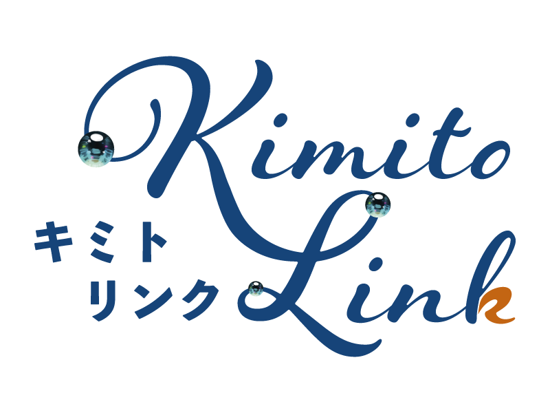
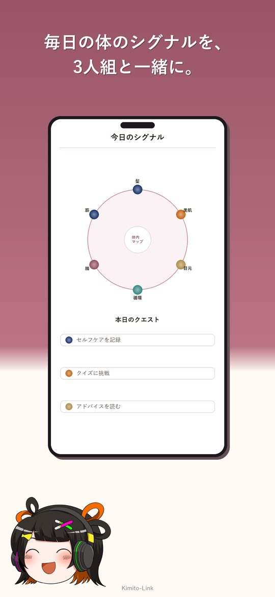
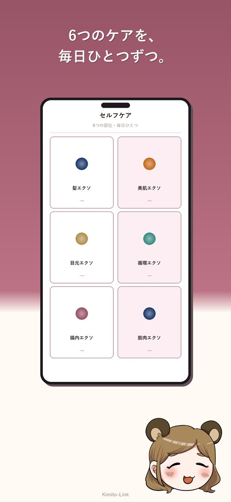
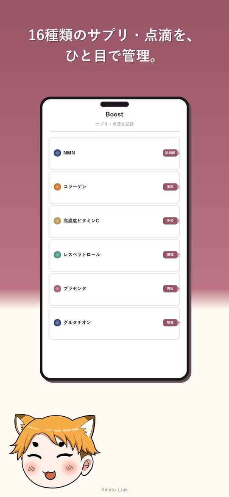
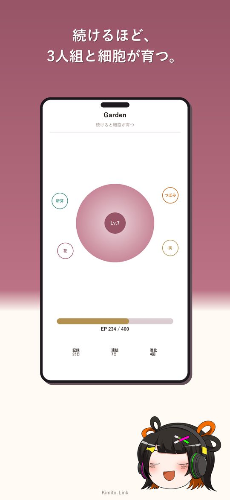
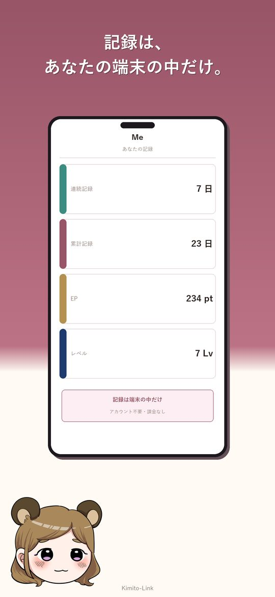

肌・疲れのセルフチェック
具体例のガイドを見ながら、その日の主観的な手ごたえを記録します。

ゆっくりエクソソーム アプリを開く


知る・記録する・振り返る
肌や疲れの手ごたえ、眠った時間、続けたケア。
毎日の小さな記録を、自分のペースで残せます。
基本の記録は無料。アプリの説明はログインせずに読めます。
診断や治療ではなく、毎日のセルフケアを振り返るためのアプリです。
毎日の使い方
肌・疲れのセルフチェックや、睡眠・ケアの記録。できた項目だけでも大丈夫です。
記録に応じたシグナルマップや、3人と育てる画面で、自分の積み重ねを振り返ります。
次の受診で聞きたいことを、個人用メモへ。画面を見せるかどうかも、自分で選べます。
数値やマップの光は、入力した記録を表す演出です。身体の測定値や、施術の効果を示すものではありません。
アプリでできること
具体例のガイドを見ながら、その日の主観的な手ごたえを記録します。
睡眠や日々の行動を、自分の記録として積み重ねられます。
サプリや点滴など、利用したものと日付を残せます。特定の施術や商品を勧める機能ではありません。
自分で決めた次の予定や、記録するきっかけを管理。通知は対応端末と許可設定によります。
自分用の写真と、受診時に聞きたいことを端末内で管理します。自動でクリニックへ送る機能ではありません。
入力したケアの記録を、光やスコアで表現。医学的な検査や診断の数値とは異なります。
記録を続ける楽しみを、3人と一緒に。続いた日や、自分の積み重ねを振り返れます。
読みものやクイズ、細胞シアター・入れ替わりリング・体内時計へ。一般的な情報を楽しめます。
セルフケアスコアの30日・90日の推移や変化率は、追加の利用条件がある機能です。基本の記録は無料のままです。
画面のイメージ
説明用の表示イメージです。実際の画面・項目は更新によって異なります。実ユーザーの記録や、効果の実績ではありません。





動画で見る
歩数・体重・睡眠・断食を非公開で残せる、kimito.link の「ロンジェビリティ」画面を3人が紹介します。動画の中の数値や名前は、説明用のデモです。
つくる人。毎日の「つなご！」を一緒に。
やってみる係。今日の小さな一歩を応援。
調べ係。知ることも、ゆっくり一緒に。
使う前に知っておきたいこと
クリニック・紹介パートナーの方へ
患者さんや利用者さんが、自分のケアや質問を振り返るためのアプリとしてご案内いただけます。生活の記録アプリとして、無料の範囲と記録の扱いを添えてご案内ください。
紹介パートナーとしての受付後、コードの発行・有効化を確認します。
紹介先が対象の有料サービスを利用した場合に、運営が成果を確認します。
料率・対象売上・確認方法・支払時期は提携時に確認します。リンクを開いただけで報酬が発生するものではありません。
ご案内・成果確認・支払いの案内は運営窓口で行います。紹介料の対象は、提携条件で定めるアプリ・サービスの利用料です。
追加機能の案内は kimito.link にログインしたあとで開きます。ログインしていない場合は、ログイン画面に移動します。
写真や健康記録を、紹介料の成果判定のために送る必要はありません。紹介するアプリの運営・対象条件も、利用者に明示してください。
このLPはログインなしで読めます。アプリでアカウントが必要になった場合は、その画面の案内に従ってください。
医学的な測定・診断・効果判定は行いません。スコアやマップは、入力した記録を振り返るための表現です。個別の体調や治療については医師にご相談ください。
自動では共有しません。本人が選んで画面を見せる使い方ができます。
記録は端末・ブラウザごとに保存されます。自動同期を前提にせず、端末やブラウザを変える前に記録の保管方法をご確認ください。
いいえ。専用コードの確認、対象の利用・支払いの確認、契約に沿った成果の計上が必要です。料率・対象条件・支払時期は運営窓口で事前にご確認ください。
3人と一緒に、毎日の記録を自分のペースで。
ログインは、表示される認証サービスの画面で本人が行います。
このアプリは一般的な情報の紹介と、生活の記録のためのものです。診断や治療を目的としたものではありません。持病・服薬・体調や施術に関する個別の判断は、医療機関で医師にご相談ください。